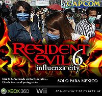
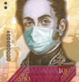

Gripe porcina
 De: La Frikipedia, la enciclopedia extremadamente seria.
De: La Frikipedia, la enciclopedia extremadamente seria.
| De la serie enfermedades y padecimientos:
|
| Gripe porcina
|
|
|
| Nombre común
|
Gripe Puerca!
|
| Clase
|
Pandemias de destrucción mundial
|
| Afecta a
|
Puercos y humanos (exceptuando a los judíos)
|
| Número de enfermos
|
Se cree que más de 1000 pero la mayoría miente para no ir a la escuela
|
| Pruebas clínicas
|
Prueba del tocino frito
|
| Extendida en
|
Gringoland, México y Latinoamérica
|
| Diagnosis (síntomas)
|
Los descritos en los síntomas
|
| Tratamiento
|
suicidarse (mas practicada)
|
| Prognosis (expectativas)
|
Muy pero muy malas
|
| ¿Contagiosa?
|
Muy contagiosa entre cristianos y católicos
|
| Dieta
|
jamon, tocino, costillas, etc
|
| Caso famoso
|
Vickie Guerrero
|
«Tomen medidas, usen tapabocas, no saluden de mano ni de beso, no se miren a los ojos ni se coman a besos... Loren Flores, Fuerza Informativa Azteca»
~ Noticias hablando sobre la Influenza del Puerco
«No hay Tapabocas»
~ Letrero de la Farmacia reportando su estado actual debido a la escasez de tapabocas
«Esto es malo como la carne de puerco»
~ Judío indignado
«Usted también puede hacer su tapabocas! y sin tener que comprarlos con el Dr. Simi!!»
~ Fuerza Informativa Azteca siendo creativos
«En México no hay Influenzaaaaa-chuu!!»
~ Secretario de Salud a punto de ser despedido por no haberle hecho caso a los gringo-canadienses y haberles puesto vacunas a todos
«Eviten saludarse de mano y saludar de beso, se recomienda mejor agarrarle la nalga al compañero o darle un arrimon para saludar»
~ El gobierno mexicano dando consejos para prevenir el contagio

Chuck Norris al infectarse, pero sus linfocitos norriticos elimino el virus a 3m de radio debido a su radioactividad.
Cara de Amadeo al ser el infectado 1 de la enfermedad A-che1N1(de procedencia argentina) después de ésto estubo incuvando en
Chuck Norris (Vease parriba)pero se desencadenó la enfermedad debido a una super pajilla.
También conocida como Gripe Porcina, aunque posteriormente re-nombrada Influenza Humana, para evitar disputas con los dioses cerdos y que los chinos nos regresaran el chorizo. Se trata de un simple catarro exagerado por los medios asta proporciones épicas y purulentas, la idea era que Obama ganara también el premio novel de medicina al descubrir que se cura con caldo de pollo y te de manzanilla.
Se sabe que es una enfermedad que se contagió de los puercos al tener relaciones un hombre y un cerdo. Se expandió por todo el DFectuoso chingándose otros estados y hasta países como Gringolandia y otros países de Latinoamérica. Se tomaron medidas extremas a tal grado de tomarlo como una Pandemia regalando cubrebocas y pastillas anti-virales, de las cuales se cree que ninguno sirve. Los últimos descubrimientos sobre esta enfermedad indican que de hecho ha estado presente en la república mexicana desde hace varias décadas.
Existen mitos acerca de la veracidad de dicha información ya que nuestra gran Secretaría de Salud no hace nada para informar y sí mucho para asustar a las masas... lo que incluso provocó que los gringos y canadienzes se dejaran inyectar una vacuna que les salió peor que la enfermedad.
El gobierno de EUA está implementando el llamado "monitoreo pasivo de inmigrantes" para evitar el virus se propague, este monitoreo incluye el uso de jeringas de plomo calibre 45.
Dicen que los mayas predijeron esta enfermedad, cuando estaban comiendo carnitas y no invitaron a Don Ramón , entonces él junto con dios hicieron una maldición que afectaria a todos los chilango-mexicanos en el planeta (ademas de la maldición de Moctezuma y las ratas conocidas como "perro chihuahua").
"Aviso:Se ha demostrado en gringoland que esta enfermedad es curable y que hay alrededor de 25 millones de dosis de medicina listas para usarse en caso de ser necesarias, lamentablemente solo están disponibles para personas de más de 1.80 m rubios ojiazules sin bigote y sombrero, también se anuncia que para los mexicanos el Dr. Simi vende una que funciona casi igual."
Síntomas
Dentro de los síntomas de la influenza porcina están:
- Falta de apetito
- Exceso de apetito
- Gripe
- Tos
- Tes
- Adoración a los cerdos y derivados, véase embutidos.
- Fiebre de 5 a 39° C
- Necrofilia
- Zoofilia
- Necrozoofilia
- Toser mucho
- Pánico(demasiado)
- Desorientación , si eres mexicano te hará ir a los Estados Unidos.
- Dificultad para respirar.
- Rigidez en las articulaciones (la polla no cuenta como articulación)
- Vómito (personas bulímicas están exentas)
- Dolor de huevos
- Picor de culo
- Muerte
- Hinchazón de huevos y de pezones
- Cualquier otro síntoma de enfermedad que no este normalmente presente en personas sanas.
Los Otros Síntomas
Investigaciones recientes han confirmado la presencia de nuevos síntomas, los cuales son los más acertados (aunque no lo crean):
- Arriscamiento del rabo (No es valido cuando uno anda
de coyon con miedo).
- Las manos empiezan a adquirir un aspecto de pata de puerco.
- Al comer, todos te dicen que eres un cerdo.
- Cuando escuchas que a alguien le dieron chicharon, sales corriendo.
- Cuando te llaman, tu contestas Oink como respuesta.
- El síntoma más peligroso es cuando uno siente una atracción sexual y sueños húmedos-eróticos con cualquiera de los siguientes personajes: Petunia, Porky, Babe (el puerquito valiente), Peggy the bird, Pigglet, Ryoga (con agua fria), el Gober precioso o la Gordillo.
En cualquiera de estos casos, ya te llevo la chingada asiste a tu médico.
La transmisión de la enfermedad se realiza por contacto a través de secreciones que contengan el virus (a través de la tos o el moco, así como por las descargas nasales o genitales), por contacto físico con algún chilango infectado, así como por apoyar al Peje
Posibles consecuencias futuras
Se cree que esta pandemia no hará nada de nada más que meter miedo a la gente y evitar que follen, también se cree que podría acabar con la humanidad.
Por todo esto, Estados Unidos cerrará las fronteras a los inmigrantes mexicanos y latinos (como si necesitasen motivos) lo cual los llevará a la ruina ya que se quedaran sin mano de obra barata y morirán. Además...
- Todo esto hará un Efecto Mariposa llevándonos al fin del mundo que concluirá el 2012 tal y como lo predijeron los Mayas.
- También se cree que es una vil farsa con el fin de asustar a todos los mexicanos para aumentar el terrorismo y que el ejército acabe con todo.
- Toda la humanidad será mitad hombre, mitad oso, mitad cerdo (si ya lo era psicológicamente, ahora será físicamente)
Medidas
El presidente de Paraguay se protege, la mascarilla es "prestada"
Esta es la manera correcta de usar un tapabocas.
Para evitar ser uno de los contagiados por esta enfermedad tomen las siguientes precauciones:
- Evite estar cerca de personas con los síntomas previamente descritos
- Lávese las manos antes de comer y despues de ir al baño
- Eviten
cojerse comerse a su novia a besos (Lo lamento).
- En caso de contagio ve con el Dr.House
- Eviten saludarse de Mano.
- Eviten hacer el amor con los cerdos, en todo caso usar condón.
- Maten a todo contagiado, asi él no te contagiara
- Eviten mirarse a los ojos...
- Aprovechen la suspensión de clases, no se da todos los días
- En caso de contagio viajar a Estados Unidos
- Eviten pensar en alguien.
- Eviten el sexo (Lo lamento también).
- No coman puerco.(Si son judíos, comanlo)
- Evita ser de Venezuela, Cuba y otros paises de Latinoamérica (Son los más jodidos así que nunca se sabe).
- No asista a lugares concurridos, es decir, escuela, orgías, iglesia, conciertos, manifestaciones gay, bukakes, etc.
- Si concurre a los lugares nombrados en el punto anterior, por favor desinfecte con Alcohol en Gel las zanahorias, pepinos, jícamas, consoladores, látigos, remeras de Madonna, Lentes de color rosa, hilos dentales de cuero, entre otros.
- En lugar de saludar de beso y con mano, mejor dar nalgadas y arrimones para saludar
Tomando estas medidas podrás vivir un día más...
¿Sabías que...
 La influenza ha inspirado al
noentiendo para la creacion de videojuegos
- ...Esta enfermedad fue inventada por los Delfines para apodararse del planeta...?
- ...Dr.House hara un especial sobre esta enfermedad en el cual, el mismo la tendra?
- ...Muchos han muerto gracias a esta enfermedad...? (¡¡Gracias...!!)
- ...Pero ninguno era político o Cartens...? (hoooooo)
- ...Cuando los delfines gobiernen el mundo, los cerdos atacaran nuevamente...?
- ...Es la rebelión de los Cerdos...?
- ...Si chupas los mocos de un cerdo te contagias...?
- ...Si ves a alguien estornudar deberías matarlo para evitar la pandemia...?
- ...Es una exageración todo este pedo...?
- ...En realidad la enfermedad la trajo Obama una semana antes para
robar el petróleo de México mejorar las relaciones con los mexicanos y fomentar el trabajo en conjunto de estos dos países ante una crisis común...?
- ...Don Ramón el único y poderoso que puede detenerlo...?
- ...Obama no logro el novel de medicina, pero si logró ser parodiado en la serie Doctor House?
- ...Los judíos son inmunes ya que no comen cerdo...?
- ...Los trabajadores Mexicanos con salario mínimo también...?
- ...Es un tipo de venganza de los judíos contra los nazis que se les salió de control...?
- ... los wombat-cerdos contribuyeron?????
- ...Es junto a la "Maldini Fever" una de los mejores enfermedades a coger
- ...La única cura definitiva conocida es el Aceite de Rateros
(y mis huevos son azules)?
- ... El secretario de Hacienda de México Cartens fue un profeta al decir que en todo el mundo daria una gripita por la resecion economica???
- ...Al leer esto te estas contagiando
- ...Si tienes sexo oral con un cerdo te de influenza
- ...Estariamos PEOR con Lopez Obrador...?
- ... Se han Encontrado virus racistas: H1N(Negro)1, H1J(Judio)1, H1G(Gays)1, H1I(Islamitas)1, entre otros que siguen mutando?
- si tienes porcina por mas de una semana, te vuelves un cerdo
Personas infectadas con el virus
 Protegiendo nuestro dinero (como si valiera algo)
- Abelardo (que también tiene gripe aviar)
- Cerdonio
- Obama
- Todo el mundo (en poco tiempo)
- Los mexicanos (A huevo, nos chingamos a todo el mundo sin necesidad de armas nucleares... XD)
- Los gringos
- Spidercerdo
- Porky
- IP anónima
- Los del Internado (Con 100 enfermedades mas)
Autor(es):
- Fordus
- Roms
- ElInventor
- Jesuscorp
- Diegocon13
- Balastian
- AlemanH
- Veni Vidi Vici
- Wmbt azael
- Dark temptation
Frikipedia 2005-2016, Licencia
GFDL 1.2 - Extraído por FrikiLeaks